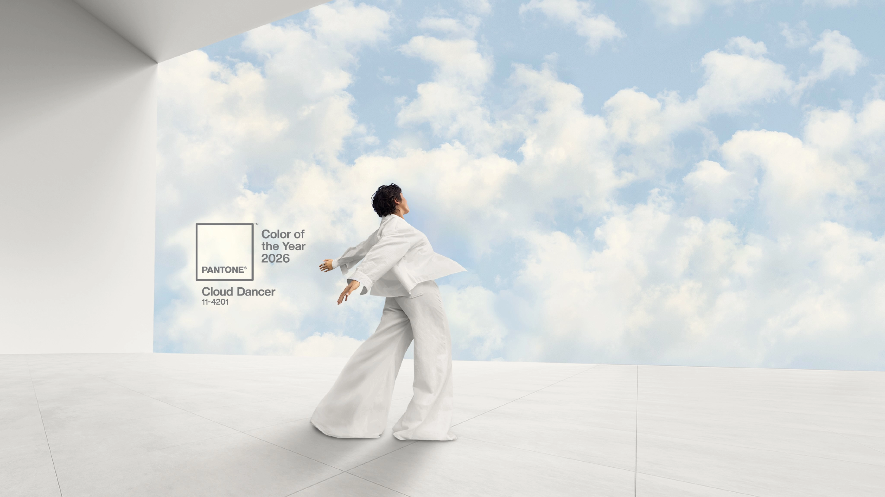

Pantone ha annunciato il colore dell’anno 2026 e inaspettatamente – o forse no – si tratta del Cloud Dancer: una sfumatura di bianco che Pantone descrive come “un colore strutturale chiave, la cui versatilità funge da impalcatura per lo spettro cromatico, facendo risaltare tutti gli altri colori”.
Questa definizione è particolarmente significativa se la si osserva dal punto di vista dell’architettura. Non si parla infatti di un colore in senso espressivo, ma di una base neutra di supporto. Un non-colore che viene elevato a guida delle scelte cromatiche di interi settori, compreso quello dell’abitare. Negli ultimi anni il bianco è diventato il linguaggio dominante dell’architettura residenziale: pareti, soffitti, pavimenti, arredi, tutto tende a dissolversi in una neutralità rassicurante. Il bianco viene presentato come sinonimo di minimalismo, ma troppo spesso non si tratta di una scelta consapevole. Il Cloud Dancer non introduce nulla di nuovo, ma legittima una tendenza già radicata, quella di uno spazio architettonico che rinuncia a esprimere il carattere di chi lo abita: il bianco diventa così uno strumento di sterilizzazione, una mano di vernice che uniforma, semplifica, rende tutto immediatamente accettabile e facilmente vendibile.
Il minimalismo nella sua accezione originaria è tutt'altro che vuoto, è il rigoroso frutto di una sottrazione consapevole, ciò a cui assistiamo oggi è invece una perdita di contenuto mascherata da essenzialità. I social media ci restituiscono versioni edulcorate dell’esistenza, frammenti di vita selezionati con cura che scambiamo per realtà, e così finiamo per vivere immersi in un rumore costante, immagini, modelli di vita, desideri indotti. In questo caos visivo e simbolico, l’architettura domestica diventa il luogo in cui cerchiamo rifugio, ma invece di progettare spazi che ci rappresentino davvero, scegliamo la neutralità assoluta. Il risultato è un abitare privo di identità, e non perché abbiamo deciso di eliminare il superfluo, ma perché abbiamo smesso di chiederci cosa sia essenziale per noi. Il bianco in questo contesto non è silenzio, ma assenza di voce. Il Cloud Dancer non rappresenta una nuova consapevolezza collettiva, né un rinnovato bisogno di leggerezza, ma è piuttosto il sintomo di una progettazione che evita il conflitto, che rinuncia al significato, che preferisce non prendere posizione, l'emblema di un’architettura che non disturba, ma che nemmeno racconta.
In determinati contesti il colore diventa persino un'arma: la cosiddetta tortura del bianco è infatti una tecnica di tortura psicologica volta alla deprivazione sensoriale, consistente nel porre un individuo vestito di bianco in una stanza priva di stimoli cromatici, interamente bianca e con illuminazione uniforme.
L'essere umano si è evoluto nello stato di natura, ricco di impulsi, pertanto non si è mai adattato fisiologicamente ad un ambiente neutro: depersonalizzazione, psicosi e allucinazioni sensoriali sono alcuni dei sintomi di una lunga permanenza in un ambiente privo di stimoli.
La questione diventa allora cruciale: il colore non è un accessorio o una tendenza da seguire, ma parte integrante del progetto. Scegliere il bianco non deve essere una scelta dettata dalla ricerca del neutro, e farlo senza una riflessione profonda equivale a rinunciare a una parte fondamentale dell’architettura, quella che collega il colore alle nostre necessità umane.
Forse è da qui che occorre ripartire, azzerando i riferimenti automatici, mettendo in discussione le palette preconfezionate e tornando a interrogarsi su ciò che davvero ci emoziona e ci rappresenta, solo così sarà possibile creare spazi autentici e a quel punto, il colore dell’anno potrebbe non servirci più.